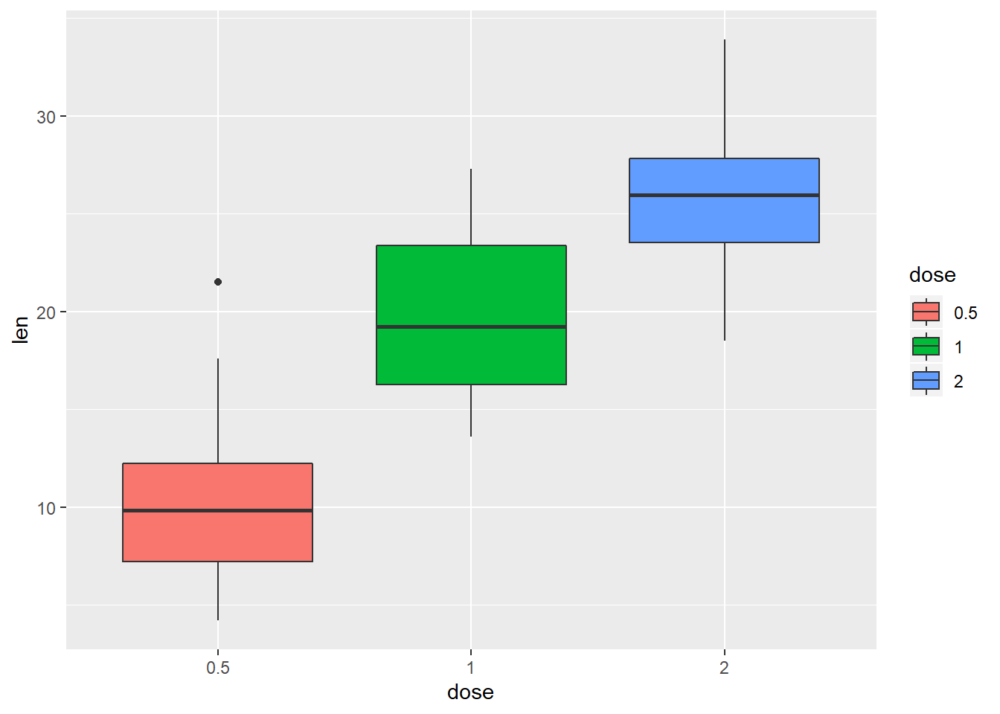
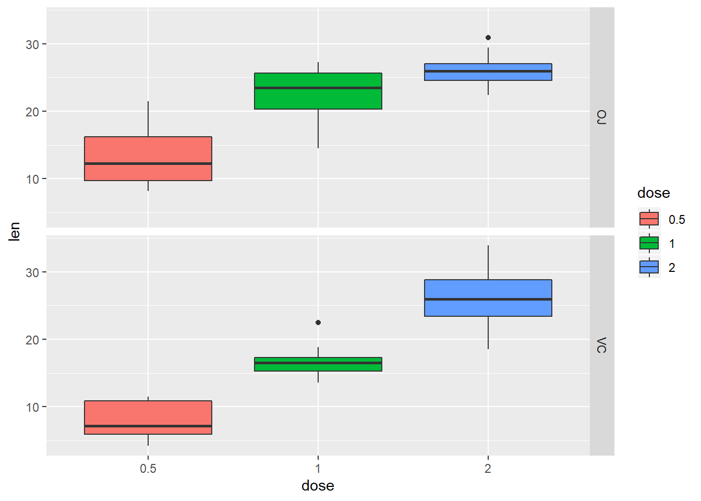
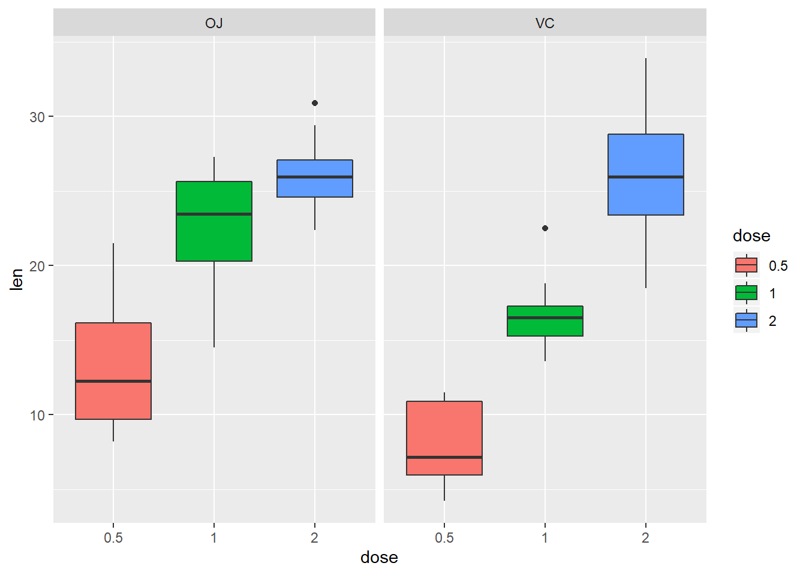
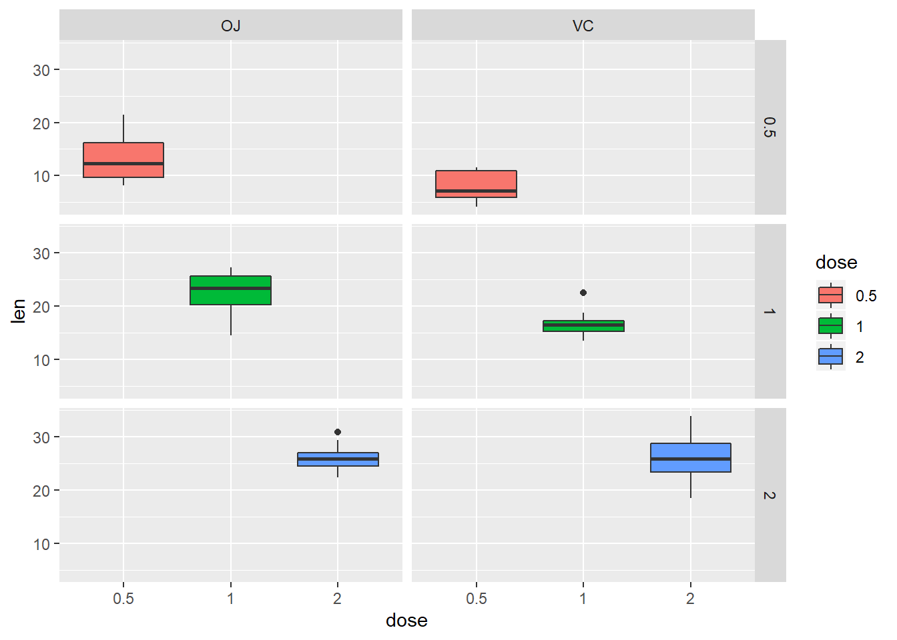
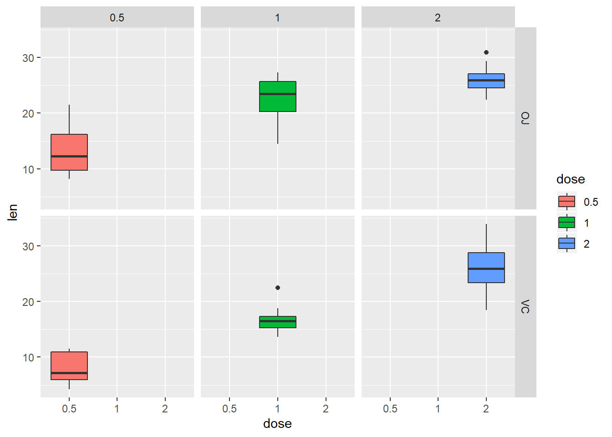
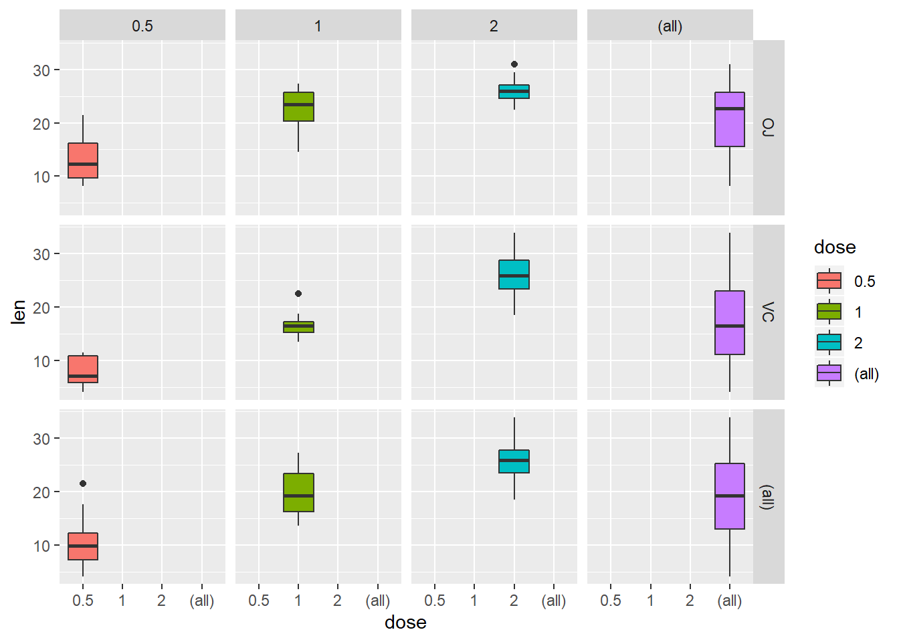
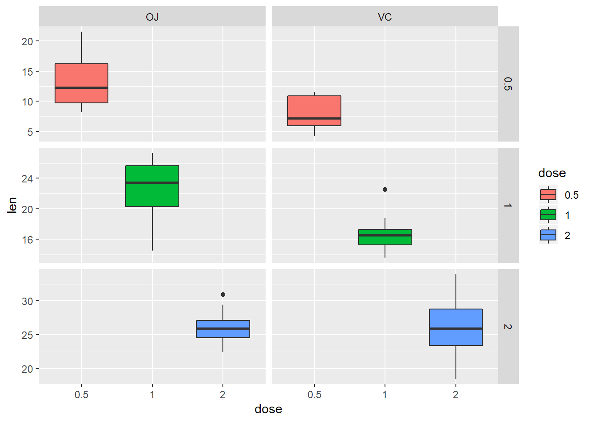
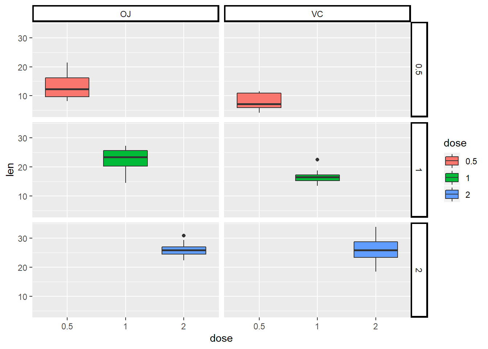
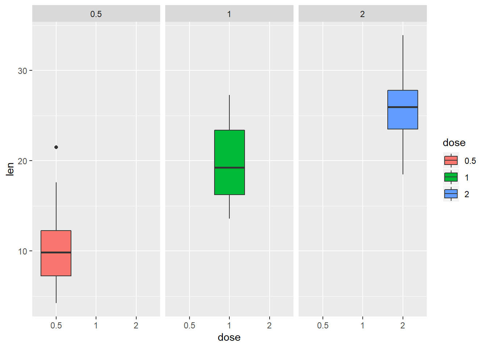
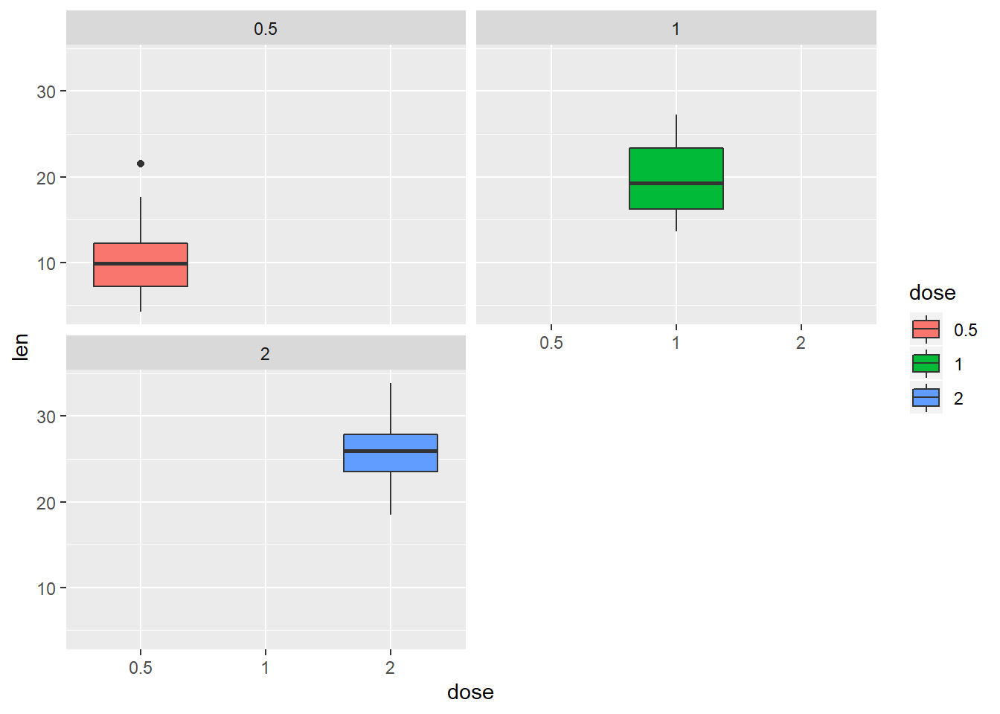

Tác giả: Nguyễn Hải Trường | 2019-02-15
Sử dụng facet giúp chúng ta có thể chia nhỏ biểu đồ thành một ma trận các biểu đồ nhỏ (a matrix of panels). Mỗi panel sẽ hiển thị các dữ liệu con khác nhau của tập dữ liệu gốc ban đầu.
Trong bài viết này, Ranalytics sẽ hướng dẫn các bạn cách chia nhỏ biểu đồ bằng việc sử dụng facet trong package ggplot2.
Có 2 hàm cơ bản là:
facet_grid()facet_wrap()
Sử dụng dữ liệu ToothGrowth có sẵn trong R - dữ liệu về tác dụng của Vitamin C đối với sự phát triển răng của loài chuột lang (Guinea pigs).
library(dplyr) # Package dùng để biến đổi dữ liệu
# Xem cấu trúc các biến trong dữ liệu
ToothGrowth %>% str## 'data.frame': 60 obs. of 3 variables:
## $ len : num 4.2 11.5 7.3 5.8 6.4 10 11.2 11.2 5.2 7 ...
## $ supp: Factor w/ 2 levels "OJ","VC": 2 2 2 2 2 2 2 2 2 2 ...
## $ dose: num 0.5 0.5 0.5 0.5 0.5 0.5 0.5 0.5 0.5 0.5 ...# Convert biến dose từ định dạng numeric sang factor
df <- ToothGrowth %>%
mutate(dose = dose %>% as.factor)
# Xem cấu trúc các biến trong dữ liệu mới
df %>% str## 'data.frame': 60 obs. of 3 variables:
## $ len : num 4.2 11.5 7.3 5.8 6.4 10 11.2 11.2 5.2 7 ...
## $ supp: Factor w/ 2 levels "OJ","VC": 2 2 2 2 2 2 2 2 2 2 ...
## $ dose: Factor w/ 3 levels "0.5","1","2": 1 1 1 1 1 1 1 1 1 1 ...# Summary dữ liệu mới
df %>% summary## len supp dose
## Min. : 4.20 OJ:30 0.5:20
## 1st Qu.:13.07 VC:30 1 :20
## Median :19.25 2 :20
## Mean :18.81
## 3rd Qu.:25.27
## Max. :33.90Dữ liệu bao gồm 3 biến:
len: độ dài của răngsupp: phương pháp áp dụngOJ: nước cam (orange juice)VC: ascorbic acid (một loại Vitamin C)
dose: liều lượng áp dụng (0.5, 1 hoặc 2 mg/ngày)
Để vẽ 1 box plot thông thường, chúng ta sử dụng câu lệnh như sau:
library(ggplot2) # Package sử dụng để vẽ biểu đồ
bp <- df %>%
ggplot(aes(x=dose, y=len, group=dose)) +
geom_boxplot(aes(fill=dose))
bp
Chúng ta thấy đối với liều lượng sử dụng càng cao thì răng của loài chuột lang càng dài. Nhưng đây là chúng ta xét chung cả 2 phương pháp (VC & OJ). Trong trường hợp, chúng ta muốn xét riêng lẻ từng phương pháp thì phải code như thế nào và kết quả sẽ ra sao?
facet_grid
facet_grid() giúp chúng ta chia biểu đồ thành những biểu đồ nhỏ theo 1 hoặc 2 biến categorical theo chiều dọc (vertical) hoặc ngang (horizontal).
Cấu trúc câu lệnh: + facet_grid(vertical ~ horizontal).
facet với 1 biến
Giả sử chúng ta muốn chia biểu đồ thành các biểu đồ nhỏ (multiple panels) theo giá trị của biến supp:
# Split in vertical direction (chia theo chiều dọc)
bp + facet_grid(supp ~ .)
# Split in horizontal direction (chia theo chiều ngang)
bp + facet_grid(. ~ supp)
facet với 2 biến
Trong trường hợp, chúng ta muốn chia nhỏ biểu đồ theo giá trị của 2 biến dose và supp:
# Facet theo 2 biến: dose and supp.
# Dòng là dose và cột là supp
bp + facet_grid(dose ~ supp)
# Ngược lại: Dòng là supp và cột là dose
bp + facet_grid(supp ~ dose)
!!! Lưu ý: Chúng ta có thể thêm argument margins=TRUE trong câu lệnh facet_grid() để có thể thêm biểu đồ về data tổng tương ứng theo các biến facet.
bp + facet_grid(dose ~ supp, margins=TRUE)
bp + facet_grid(supp ~ dose, margins=TRUE)
facet scales
Mặc định, tất cả các panel sẽ có cùng một scales (scales="fixed"). Chúng ta có thể tùy chỉnh set scales: free, free_x, hoặc free_y.
Giả sử chúng ta muốn để trục y có scales khác nhau tại các panel, chúng ta dùng câu lệnh sau:
# Set trục y có scales khác nhau trong các panel khác nhau
bp + facet_grid(dose ~ supp, scales='free_y')
facet labels
Chúng ta có thể sử dụng argument labeller để tùy chỉnh labels của các panels.
# Thêm giá trị của cả 2 biến supp và dose trong các panels
bp + facet_grid(dose ~ supp, labeller=label_both)Chúng ta có thể sửa đổi facet labels như sau:
# Thay đổi facet text font.
# Các font style có thể lựa chọn:
# 'plain', 'italic', 'bold', 'bold.italic'.
bp +
facet_grid(dose ~ supp)+
theme(strip.text.x = element_text(size=12, color="black",
face="bold"),
strip.text.y = element_text(size=12, color="black",
face="bold"))# Thay đổi facet background
bp +
facet_grid(dose ~ supp)+
theme(strip.background = element_rect(colour="black", fill="white",
size=1.5, linetype="solid"))
facet_wrap
facet_wrap() có thể giúp chúng ta chia biểu đồ thành các biểu đồ con được đặt cạnh nhau theo số lượng dòng và cột nhất định như ý muốn.
Cấu trúc câu lệnh với facet_wrap() tương tự như facet_grid(), nhưng có thêm argument ncol và nrow.
# Chia biểu đồ theo biến dose theo phương ngang
bp + facet_wrap(~ dose)
# Set số cột = 2
bp + facet_wrap(~ dose, ncol=2)
Như vậy, chúng ta đã vừa được học cách sử dụng facet trong ggplot2. Chúc các bạn học tập và làm việc hiệu quả với Ranalytics.vn!